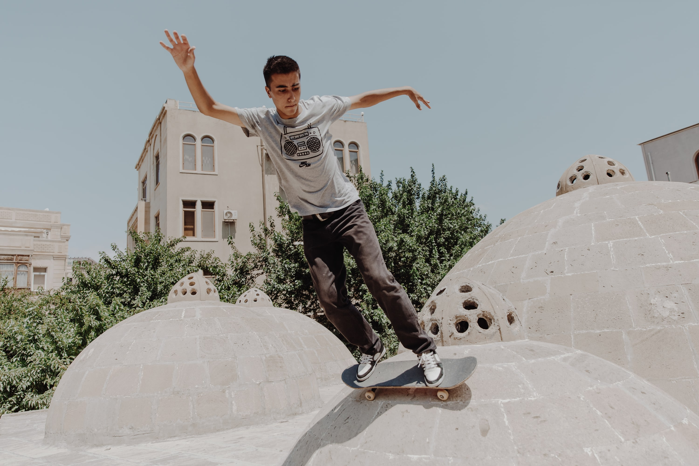

Мирзоев Вагиф Яшар оглы
Место учёбы: Выпускник Азербайджанского Технического Университета, факультет: металлургический
Место работы: Alarna Consulting - 1С программист
Рубрика: Экстрим
Instagram: mirzawets
Дата публикации: 08.09.2021

Скейтбординг - это фристайл движения
Скейтбординг помогает мне чувствовать себя свободным всегда! Чтобы не случилось вокруг, какие проблемы, заботы, гнев, грусть не поглотили тебя, ты просто берёшь доску и как-будто отпускаешь эту ношу на время, уезжая от неё на скейте. Для меня - это как медитация, которая помогает мне привести мысли в порядок и сохранить баланс между разумом и эмоциями.
В скейтбординге нет никаких рамок и нет предела. Ты сам выбираешь какой трюк выучить, откуда именно его сделать и даже создать свой трюк, при наличии сильной креативности. В нём ты можешь выразить себя, вложить свою энергию и любовь. Полная свобода творчества и самовыражения. И тебе ничего не нужно для этого. Достаточно ровной поверхности и скейта под ногами.

Гуляя по парку, вы можете увидеть ступеньки, скамейку, казалось бы что тут особенного? А для нас это очередное место, где мы можем покататься, снять видео трюков с друзьями или просто повеселиться вместе. Если включить фантазию, то такое ощущение, что город - это как лист бумаги и ты как ручка расписывающая по ней, разъезжая на скейте по улицам.
Не описать словами, когда ты долго делаешь какой-то трюк со ступенек, преодолев страх и боль при падениях и спустя десятки попыток всё-таки увозишь желанный трюк. Это очень сильно заколяет и формирует характер.
Как известно, скейтбординг зародился тогда, когда калифорнийские сёрферы не могли кататься на сёрфе из-за отсутствия волн и они придумали такую альтернативу, типа "каменного сёрфинга". Все они слушали панк-рок и это также повлияло на культуру.
Основополагающее его бунтарская часть. Очень весело иногда спускаться по спуску через людей и замечать как они пугаются, говоря: "бисмиллах"))
Также скейтбординг - это семья по всему миру. В каждом крупном городе ты можешь найти себе единомышленников и почувствовать город с другой стороны, его архитектуру и настоящую атмосферу города.